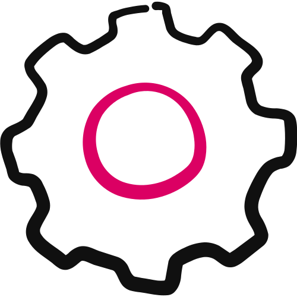

How It Works · 1 of 4
How the System Works
One system you build and one route you grow through. Read this first, and every chapter after it makes sense.

You'll leave with the whole picture: what you're building, the order you build it in, and how your events grow from a first micro event to a $100K month.
- There are two parts. The Engine is what you build. The Accelerator is how you grow. 01
- The Engine has 3 pillars and 9 steps. Build the offer, make the money, then fill the machine. 02
- The Accelerator has 4 phases. Each one proves one thing before you move up. 03
- Two laws run underneath. Longer events convert better, and people who pay show up to buy. 04
- You move up in 28-day cycles. Hit your phase's number across one full cycle, then step up. 05
01
Two Parts, One System
Coach Launch runs on two things that work together.
3 pillars and 9 steps. Everything you build: your message, your offer, your close, your funnel and your traffic.
4 phases. When you use each step, in what order, and how you know you're ready to move up.
Live virtual events that close high-ticket clients from the room, without one-to-one selling.
You need both. An engine with no route goes nowhere in particular. A route with no engine is just a map.
Build the vehicle first, then follow the map. The sequence is what makes the result repeatable.
02
The Engine: 3 Pillars, 9 Steps
The map at the top of this page is the whole Engine. The Guidebook home shows it with every step explained. It runs left to right, and every step builds on the one before it.
An offer the room can't say no to. Your $Million Story™, your Magic Formula™ and your Red Diamond Offer™.
Where the money gets made. The Sniper Close™ Sequence, the Cash Flow Engine™ and the Genie X Converter™.
Consistent buyers, ready to invest. Goliath Content™, Pixie Dust Social™ and Dragon Fire Ads™.
The nine steps are the zoomed-out view, kept simple on purpose. Zoom in and each step has parts inside it. Step 1, the $Million Story™, is built in three parts: your $Million Promise™, your Golden Avatar™ and your $Million Moment™.
That's why this Guidebook has more chapters than steps. Each chapter is one part of one step, and the label on every chapter tells you where it sits.
Each step reads the ones before it. Your Magic Formula™ is built on your promise. Your offer is built on your Magic Formula™. Your close sells that offer. Skip a step and everything after it is built on a guess.
03
The Accelerator: 4 Phases
The Accelerator is how your events step up, from your first micro event to an automated $100K month. Each phase proves one thing, and you don't move up until it's proven.
| Phase | It proves | The event | The goal |
|---|---|---|---|
| 1 · Launch | Your message | A micro event, weekly | Your first 3–5 paying clients |
| 2 · Execute | Your offer | A single day, weekly | $25K months |
| 3 · Growth | Your pitch | A single day, fortnightly | $50K months |
| 4 · Mastery | Scale | A multi-day event, monthly | $100K months |
Each phase adds one new close and reaches one rung higher on the offer ladder. The full detail of every phase is on The 4 Phases, and the offers and closes are on Offers & Closes.
Your Money Model (Step 3) is where you work out which phase you're in right now. That choice shapes your event, your pricing and the close you build.
04
The Two Laws
Two simple laws sit under every phase. Every step up the Accelerator turns one or both of these dials.
Immersion = ConversionThe length dial
The longer people spend with you, the easier the close and the higher the offer you can put in front of them.
That's why every phase makes the event longer: 60–90 minutes in Phase 1, up to a multi-day event in Phase 4.
People Who Pay, Pay AttentionThe money-in dial
Money in before the close buys a better audience, and cash flow that pays for the ads.
Free fills the room. Paid fills it with buyers. That's why every funnel from Phase 2 on has at least one place to pay, even when entry is free.
05
The 28-Day Cycle
Everything is measured in 28-day cycles. You graduate from a phase by hitting its benchmark across one full cycle, not one lucky event.
| Phase | How often | Events per 28 days |
|---|---|---|
| 1 · Launch | Weekly | 4 |
| 2 · Execute | Weekly | 4 |
| 3 · Growth | Fortnightly | 2 |
| 4 · Mastery | Monthly | 1 |
Fewer events, but longer and deeper ones. By Phase 4 you run one multi-day event a month. After three $100K months in a row, it gets automated.
06
Your Path Through This Guidebook
The contents on the left is already in build order. Work down it.
- Set up your AI Workspace. One folder that holds everything you build, so every builder can read the ones before it.
- Build your five Foundations. Your Business Brand Profile, Visual Style Guide, Brand Voice, Offer Pricing and Competitive Landscape. Every builder reads them.
- Build the Engine, step by step. Start at Step 1, the $Million Promise™, and follow the chapters in order.
- Set your phase in the Money Model. It tells you which phase you're in and which close to build.
- Run your events and track your numbers. Use The Numbers to see what each cycle should bring in.
07
Your Action Items
Tick these off as you go. Your ticks stay in this browser, and when they're all done the contents marks this page complete.
Build the vehicle, then follow the route. One step at a time, one phase at a time, and the next one always gets easier.
Coach Launch
Apply For Partnership Opportunity
Last updated 2026-11-13